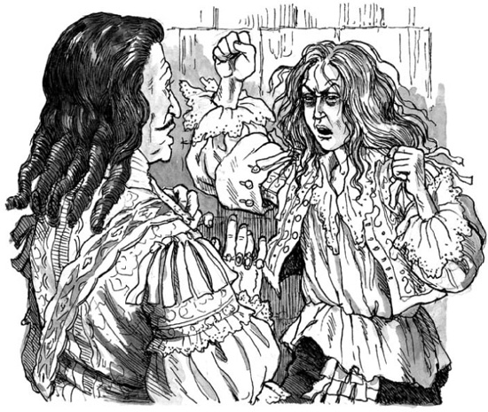

Chiếc xe của Fouquet nhanh chóng tiến về Pháo đài Bastille. Nhưng những người lính gác ở cổng nhà tù không nhận ra vị bộ trưởng.
‘Tôi là Fouquet!’ ông hét. ‘Tôi là Bộ trưởng Tài chính của nhà vua.’
‘Không đúng!’ một trong những người lính gác hét lên. ‘Quý ông Fouquet đang ở Vaux!’
Sau đó, Baisemeaux đi ra từ phòng.
‘À! Thưa ngài Bộ trưởng,’ ông nói. ‘Tôi xin lỗi. Tôi —’
‘Không sao đâu,’ Fouquet nói. ‘Những người lính gác của ông làm tròn nhiệm vụ của họ tốt lắm, Baisemeaux. Tôi sẽ nói lại với nhà vua điều đó. Nhưng tôi muốn nói chuyện với ông.’
Ông đi theo viên tổng giám thị vào phòng.
‘Ông có gặp Giám mục Vannes vài ngày gần đây không?’ Fouquet hỏi.
‘Có, thưa ngài,’ Baisemeaux nói. ‘Ông ấy ở đây đêm qua.’
‘Tại sao ông lại giúp ông ấy phạm tội?’ Fouquet hỏi.
‘Phạm tội?’ Baisemeaux nói. ‘Phạm tội gì cơ?’
‘Đêm qua, Giám mục đã đưa một tù nhân đến đây,’ Fouquet nói.
‘Đúng thế,’ Baisemeaux nói. ‘Đó là sự thật.’
‘Hãy dẫn tôi đến gặp người đó ngay lập tức,’ Fouquet nói.
‘Đến gặp Marchiali ư?’ Baisemeaux nói.
‘Marchiali?’ Fouquet nói. ‘Marchiali là ai?’
‘Tù nhân của Giám mục,' Baisemeaux trả lời. ‘Ông sẽ đưa ông ta đi ư? Điều đó làm tôi mừng lắm! Ông ta la hét và ầm ĩ quá. Ông ta hét, "Ta là Vua của nước Pháp!" Ông ta là một tên điên.’
‘Hãy dẫn tôi đến phòng giam của ông ta ngay lập tức,’ Fouquet nói.
‘Ông có lệnh không?’ Baisemeaux hỏi.
‘Lệnh gì cơ?’ Fouquet hỏi.
‘Lệnh của nhà vua,’ Baisemeaux nói. ‘Giám mục đã nói, "Chỉ tôi hoặc chính nhà vua mới được nói chuyện với tù nhân này." Tôi sẽ dẫn ông đến gặp tù nhân, nhưng trước tiên tôi phải có lệnh từ nhà vua.’
‘Sau này tôi sẽ viết lệnh cho ông,’ Fouquet nói. ‘Nhưng hãy dẫn tôi đến gặp tù nhân ngay đi! Ông muốn tôi mang mười ngàn quân và ba mươi khẩu súng lớn đến đây sao?’
Baisemeaux sợ hãi. Ông đưa Fouquet đi dọc các hành lang đáng sợ của nhà tù. Chẳng mấy chốc, vị bộ trưởng nghe thấy tiếng của nhà vua. Nhà vua trẻ đang la hét cầu cứu. Họ đến trước cửa phòng giam.
‘Đưa tôi chìa khóa!’ Fouquet nói. Ông lấy nó từ tay viên tổng giám thị. ‘Bây giờ thì đi đi! Sau này, tôi sẽ gọi ông. Lúc đó ông phải quay lại thật nhanh.’
Fouquet tra chìa khóa vào cửa. Tiếng la hét phát ra từ bên trong phòng giam.
‘Cứu tôi! Cứu tôi! Tôi là Vua của nước Pháp!’ giọng nói hét lên. ‘Quý ông Fouquet đã đưa tôi đến đây! Fouquet phải chết! Kẻ phản bội phải chết!’
Cánh cửa mở ra. Trong chốc lát, hai người nhìn nhau. Sau đó, nhà vua lên tiếng nhẹ nhàng.
‘Ông định giết tôi sao, Fouquet?’ ông nói.
‘Tâu bệ hạ, ngài không nhận ra người bạn thực sự của mình sao?’ Fouquet trả lời.
‘Bạn tôi – ông ư!’ Louis nói.
‘Tâu bệ hạ,’ Fouquet nói. ‘Bây giờ ngài đã được tự do.’ Và ông kể cho nhà vua nghe về âm mưu của Aramis.
‘Ta không tin câu chuyện này về anh em sinh đôi,’ nhà vua nói. ‘Điều đó là không thể! Những lời nói dối này là một phần trong âm mưu của Giám mục. Baisemeaux cũng tham gia vào đó.’

‘Không, tâu bệ hạ,’ Fouquet nói. ‘Giám mục Vannes đã lừa gạt viên tổng giám thị. Baisemeaux là một người trung thực. Nhưng Giám mục chuẩn bị cho âm mưu của mình rất cẩn thận. Ông ta nghĩ, "Marchiali có khuôn mặt giống nhà vua. Các bộ trưởng, mẹ và gia đình nhà vua sẽ tin vào hắn." Đó là sự thật, tâu bệ hạ!’
‘Giám mục hiện ở đâu?’ nhà vua hỏi.
‘Ông ta đang ở nhà tôi tại Vaux,’ Fouquet trả lời.
‘Tại Vaux ư!’ nhà vua nói. ‘Ông đã bắt ông ta chưa?’
‘Thưa bệ hạ, trước tiên tôi muốn thả bệ hạ tự do,’ Fouquet nói. ‘Nhưng giờ đây, xin ngài hãy ra lệnh.’
Louis suy nghĩ trong vài giây. Sau đó ông lên tiếng.
‘Cho một trăm lính đến đây,’ ông nói. ‘Họ sẽ đi cùng chúng ta đến Vaux. Những kẻ phản bội sẽ phải chết.’
‘Nhưng tâu bệ hạ, người này, Marchiali, có phải anh em sinh đôi của ngài không?’ Fouquet nói. ‘Ngài không thể giết anh em mình.’
‘Ta không tin câu chuyện đó!’ Louis tức giận nói. ‘Hắn không phải anh em ta! Hắn sẽ chết! Tất cả những kẻ phản bội sẽ chết.’
‘Tâu bệ hạ,’ Fouquet nói. ‘Xin đừng giết Giám mục hoặc bạn của ông ta, Porthos.’
‘Họ sẽ phải chết!’ nhà vua đáp lại. ‘Xin đừng nói về họ nữa.’
‘Tôi xin lỗi, tâu bệ hạ,’ Fouquet nói. ‘Tôi phải nói với ngài một điều. Tôi đã tặng cho Giám mục và bạn ông ta những con ngựa tốt nhất của tôi. Họ sẽ trốn đến hòn đảo Belle-Isle của tôi.’
‘Những chàng lính ngự lâm của ta sẽ chiếm Belle-Isle,’ nhà vua nói. ‘Và họ sẽ giết hai tên phản bội này!’
Fouquet rời khỏi phòng giam và gọi viên tổng giám thị.